学业助手攻略：期末忙不过来？你的 24 小时学伴已上线
本章为进阶教程，如需了解操作方式，请前往 WorkBuddy × ima 功能指引 和 如何用 WorkBuddy 把 ima 知识库越用越厚。
大学学习中，你可能遇到过这些困境：
- 课程资料越来越多，却始终没有形成清晰的知识框架；
- 不同课程要求提交论文、PPT、表格或网页，每次都要重新寻找工具；
- 小组资料散落在微信聊天中，收集和分享很麻烦。
本篇将从上述三类常见学习难题出发，看看如何用 WorkBuddy × ima，把课程资料变成理解、成果和协作基础。
你可以根据自己的专业、课程要求和学校关于 AI 使用的规范，选择适合的部分参考。
一、资料看过很多，却还是理不清、学不会
学的时候，抽象概念看不懂——好不容易啃下一块，看新内容又把旧的丢了，知识散落一地，串不起来。
让 AI 帮忙，又得反复上传资料、解释课程背景和自己的学习进度；得到大段文字的回复后，依然没有耐心读完。
这时，可以先将课程资料保存到 ima 知识库。
在学习时，让 WorkBuddy 调用其中的内容，根据知识特点选择合适的可视化方式进行讲解，并将学习的内容整理为笔记，回存至 ima。
用更直观的方式讲解可靠的知识
在 ima 中建立知识库，将课程资料导入知识库中。
在 WorkBuddy 中要求调用对应 ima 知识库进行讲解，WorkBuddy 会自行根据知识特点选择合适的讲解形式。
请结合 ima 中"消费者行为学"知识库的内容，讲解"经典条件反射"和"操作性条件反射"。我理解两者的定义，但放进案例后容易混淆。请根据知识特点选择合适的方式讲解，并结合课程案例说明区别。
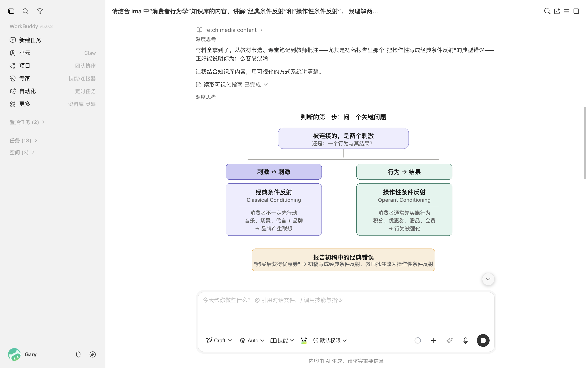
梳理知识之间的联系
记住单个定义，不代表形成了知识体系。
WorkBuddy 可以结合课程大纲和学习资料，梳理知识之间的层级、并列、先后和因果关系，帮助你理解不同知识如何共同解释一个问题。
例如，可以让它围绕"消费者决策过程"，连接个人、社会、文化和情境因素，形成完整的知识架构。
请结合 ima 中"消费者行为学"知识库里的课程大纲、教材、课件和课堂笔记，围绕"消费者决策过程"梳理知识架构。重点呈现知识之间的层级、并列、先后和因果关系。请根据内容选择合适的可视化方式，不要只做逐章摘要。
生成笔记并保存回 ima
完成讲解后，可以让 WorkBuddy 生成笔记，并一键保存回 ima，方便后续复习。
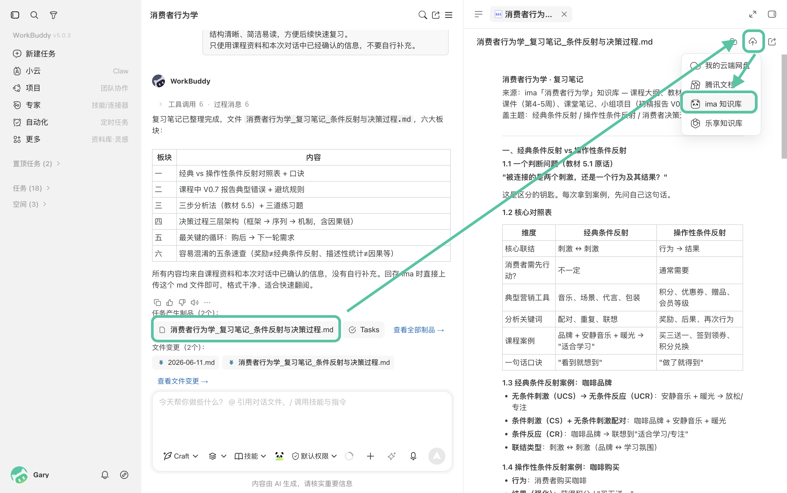
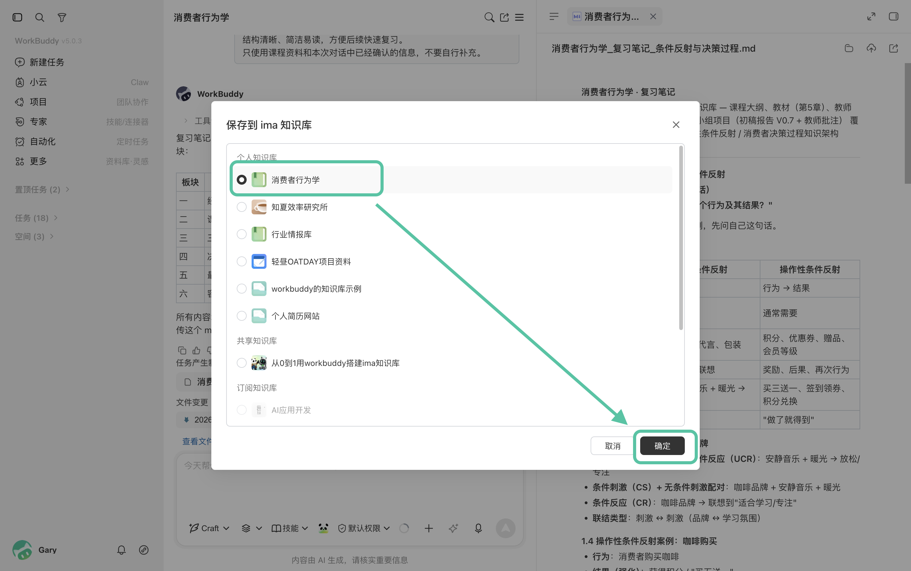
二、作业形式多样，不知道怎样开始
大学作业除了论文，还包括 PPT、调研报告、数据表格、信息图等多种形式。
面对复杂作业，可以先让 WorkBuddy 阅读作业要求和评分标准，梳理核心问题、交付内容、评分重点与格式要求，并生成清晰的执行计划。
方向确认后，WorkBuddy 可以直接制作可继续编辑的初版成果，让你不必再对着空白页面从零开始。
如果一项作业需要同时提交多种成果，还可以开启多个任务并行推进，提高整体制作效率。
请将任务拆分给多个 Agent 并行推进，利用 skills 同时完成以下成果：
- 数据分析 Agent： 清洗问卷数据，生成包含关键指标和图表的 Excel 文件；
- 报告撰写 Agent： 结合调研方案与分析结果，制作结构完整的调研报告；
- 演示制作 Agent： 提炼核心发现，制作一份适合 8 分钟课堂展示的 PPT。
请在各任务完成后统一汇总并交叉检查，确保 Excel、调研报告和 PPT 的数据口径、核心发现与结论保持一致。无法从现有资料中确认的信息，请明确标注，不要自行补充。
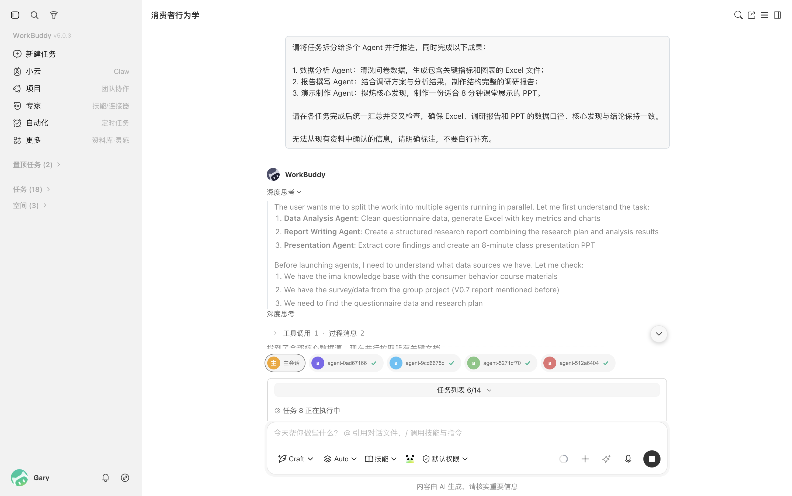
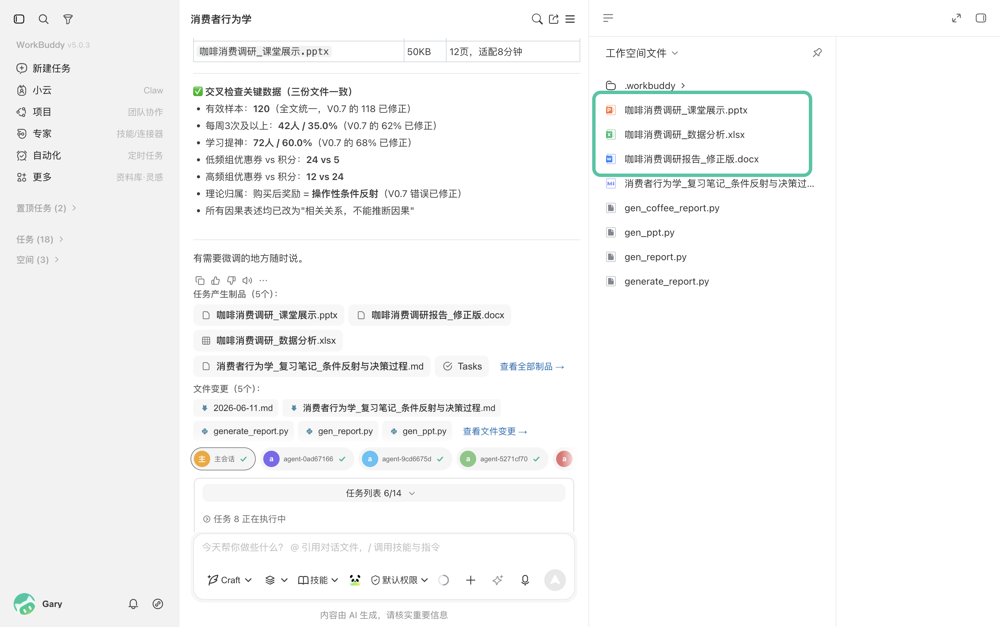
三、小组文件怎样方便地收集和分享
小组作业的资料和阶段成果经常通过微信传递。借助 WorkBuddy × ima，可以更方便地在微信中收集资料、分享成果。
从微信获取文件
微信聊天中的作业要求、参考资料、文档、表格和图片，可以直接上传到 ima，集中保存并供 WorkBuddy 调用。
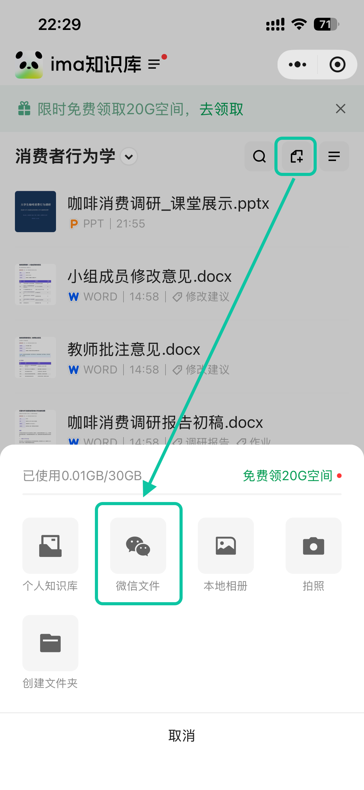
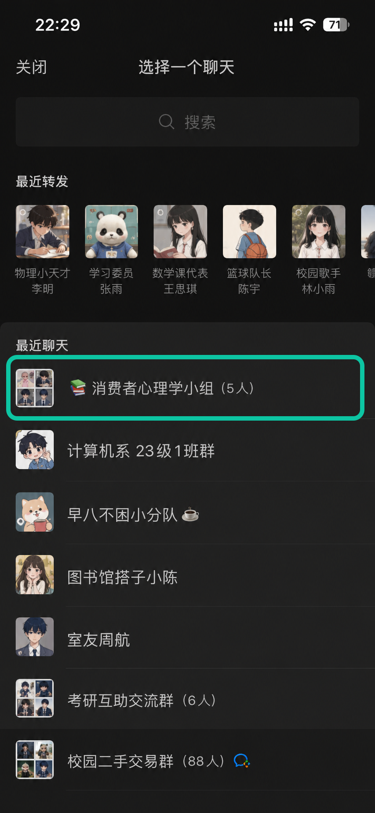
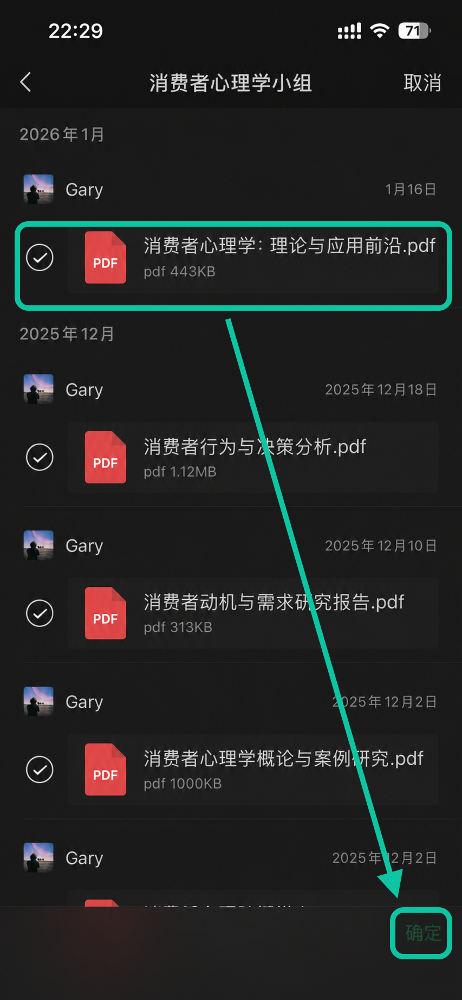
将成果发送到微信
WorkBuddy 完成报告、PPT、表格或其他产物后，可以直接分享到微信，方便组员查看和讨论。
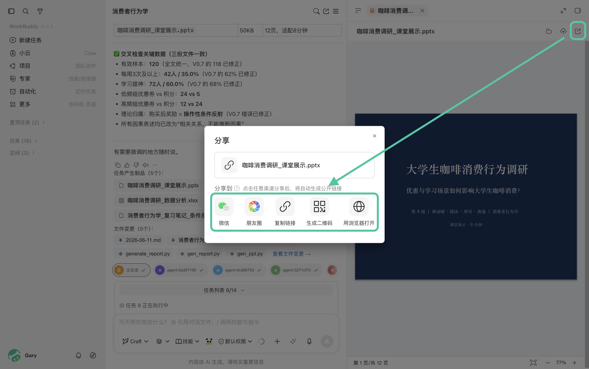
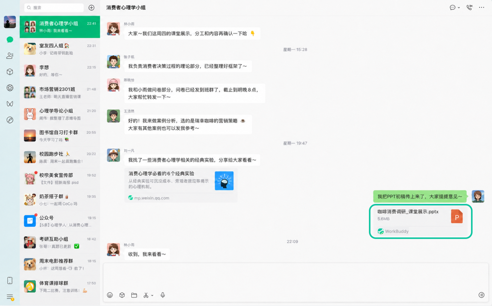
四、让 AI 参与学习，而不是代替学习
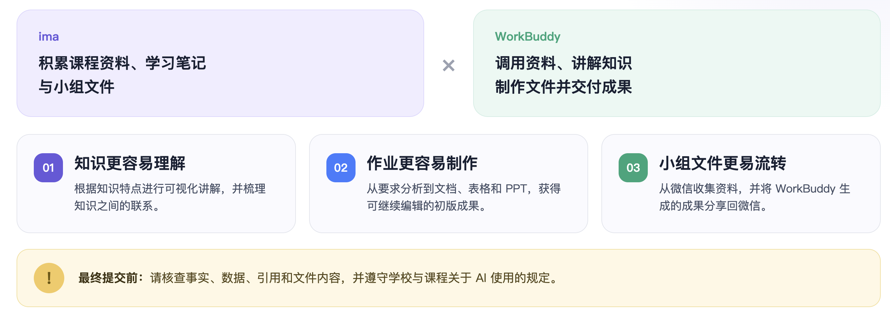
在这套方式中，ima 负责积累课程资料和学习成果，WorkBuddy 负责调用资料、讲解知识、制作文件并交付产物。
它的价值不是替学生完成思考，而是让知识更容易理解、作业更容易制作、小组文件更容易流转。
最终提交前，仍需核查事实、数据、引用和文件内容，并遵守学校和课程关于 AI 使用的规定。